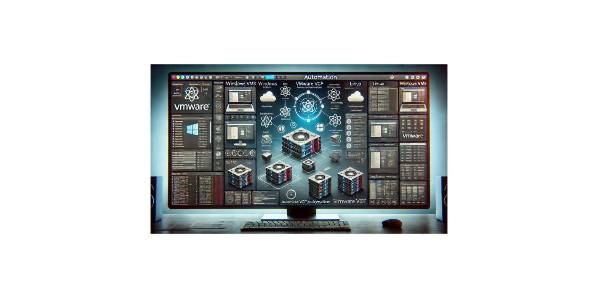
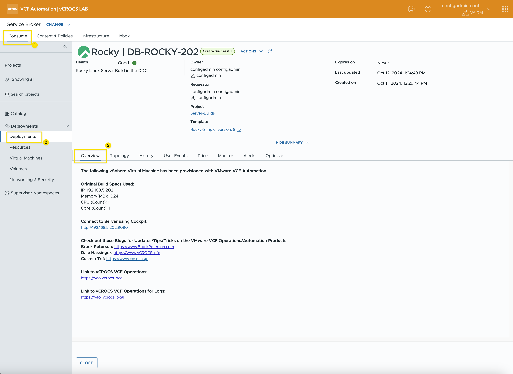
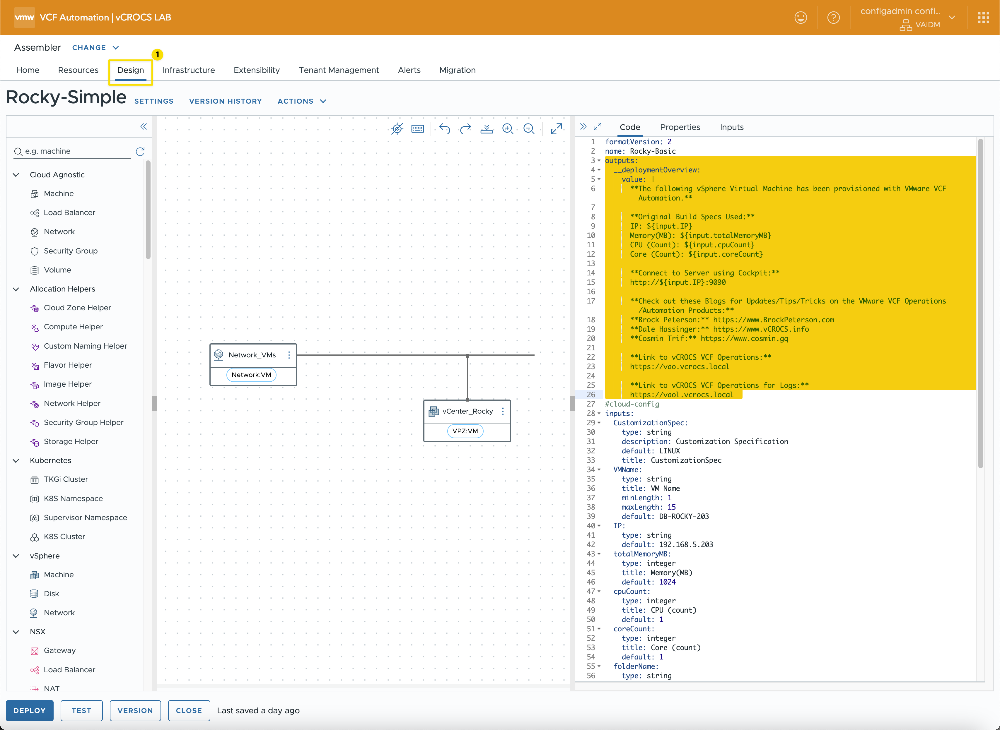

VCF Automation Deployments | Overview Tab

How to display important and useful information in the VCF Automation Overview Tab.
Including information in the VCF Automation Deployments Overview Tab creates a user-friendly experience for application owners.
**Note: VCF Automation 8.18.0 was used to create this Blog**
When VCF Automation introduced the Overview Tab in Deployments, I quickly began using it in my lab to streamline communication. Previously, I sent emails with crucial details about new server VM builds to the user initiating the deployment. Now, I’ve shifted to adding this information directly into the Deployment Overview Tab.
Here are some use cases where adding information to the Deployments Overview Tab is beneficial for new Server VMs:
- Linux VMs: For Linux VMs in my lab, I use Cockpit for a web-based interface to monitor server stats, logs, and more. I include the Cockpit URL in the Overview Tab for easy access.
- VM Specifications: I often include the CPU, memory, and IP details of the VM as it was initially created. This helps answer common questions about how the VM has changed since it was first provisioned. We’ve all experienced situations where a VM was requested with fewer resources than needed, only for resource adjustments to be requested soon after.
- Monitoring Links: You can also add links to monitoring tools like VCF Operations. This will not show monitoring data but give you quick access to the application GUI.
- Additional URLs: Any helpful URLs, like management or configuration portals, can be added to enhance accessibility. Links to the applications only.
Screen Shots
Screen Shot of the VCF Automation Deployment Overview Tab:

Screen Shot of the Assembler Template:

VCF Automation Design Template
Example Template Yaml Code:
- To utilize the Overview Tab, you MUST include "formatVersion: 2". Refer to the example code below.
- The “outputs:” section in the YAML defines the data displayed in the Overview Tab.
- You can incorporate “${input.xxx}” values to display specific data in the Overview Tab.
formatVersion: 2
name: Rocky-Basic
outputs:
__deploymentOverview:
value: |
**The following vSphere Virtual Machine has been provisioned with VMware VCF Automation.**
**Original Build Specs Used:**
IP: ${input.IP}
Memory(MB): ${input.totalMemoryMB}
CPU (Count): ${input.cpuCount}
Core (Count): ${input.coreCount}
**Connect to Server using Cockpit:**
http://${input.IP}:9090
**Check out these Blogs for Updates/Tips/Tricks on the VMware VCF Operations/Automation Products:**
**Brock Peterson:** https://www.BrockPeterson.com
**Dale Hassinger:** https://www.vCROCS.info
**Cosmin Trif:** https://www.cosmin.gq
**Link to vCROCS VCF Operations:**
https://vao.vcrocs.local
**Link to vCROCS VCF Operations for Logs:**
https://vaol.vcrocs.local
#cloud-config
inputs:
CustomizationSpec:
type: string
description: Customization Specification
default: LINUX
title: CustomizationSpec
VMName:
type: string
title: VM Name
minLength: 1
maxLength: 15
default: DB-ROCKY-203
IP:
type: string
default: 192.168.5.203
totalMemoryMB:
type: integer
title: Memory(MB)
default: 1024
cpuCount:
type: integer
title: CPU (count)
default: 1
coreCount:
type: integer
title: Core (count)
default: 1
folderName:
type: string
title: vCenter Folder
default: Rocky-Linux
enum:
- Rocky-Linux
- ESXi-01-VMs
- ESXi-02-VMs
resources:
Network_VMs:
type: Cloud.vSphere.Network
properties:
name: PG-VMs
networkType: existing
constraints:
- tag: Network:VM
vCenter_Rocky:
type: Cloud.vSphere.Machine
properties:
image: ROCKY9
#flavor: SM
totalMemoryMB: ${input.totalMemoryMB}
cpuCount: ${input.cpuCount}
coreCount: ${input.coreCount}
name: ${input.VMName}
fqdn: ${input.VMName}.vcrocs.local
folderName: Rocky-Linux
remoteAccess:
authentication: usernamePassword
username: root
password: ${secret.administrator}
customizationSpec: ${input.CustomizationSpec}
constraints:
- tag: VPZ:VM
networks:
- network: ${resource.Network_VMs.id}
assignment: static
address: ${input.IP}
Lessons learned:
- The Deployment Overview Tab is an excellent tool for displaying static key information about VM server builds.
- Adding URLs to the deployment Overview Tab provides a convenient way to connect directly to the VM for management.
Links to resources discussed is this Blog Post:
I created a Google NotebookLM Podcast based on the content of this blog. While it may not be entirely accurate, is any podcast ever 100% perfect, even when real people are speaking? Take a moment to listen and share your thoughts with me!
vCROCS Deep Dive Podcast | VCF Automation Overview Tab
In my blogs, I often emphasize that there are multiple methods to achieve the same objective. This article presents just one of the many ways you can tackle this task. I've shared what I believe to be an effective approach for this particular use case, but keep in mind that every organization and environment varies. There's no definitive right or wrong way to accomplish the tasks discussed in this article.
Always test new setups and processes, like those discussed in this blog, in a lab environment before implementing them in a production environment.